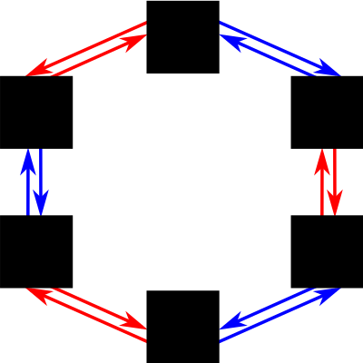
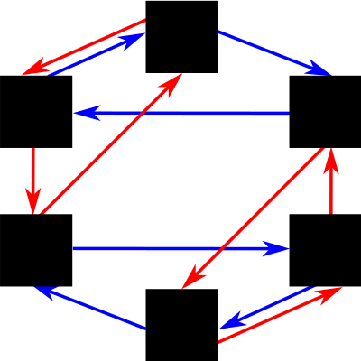

<!doctype html>
<html>
<head>
    <title>Experiment 1</title>
    <script src="https://ajax.googleapis.com/ajax/libs/jquery/1.11.1/jquery.min.js"></script>
    <script src="../util/group_theory.js"></script>
    <script src="../util/etc.js"></script>
    <script src="../jspsych/jspsych.js"></script>
    <script src="../jspsych/plugins/jspsych-instructions.js"></script>
    <script src="../jspsych/plugins/jspsych-survey-text.js"></script>
    <script src="../jspsych/plugins/jspsych-survey-likert.js"></script>
    <script src="../jspsych/plugins/jspsych-survey-multi-choice.js"></script>
    <script src="../jspsych/plugins/fractal-mutation-plugin.js"></script>
    <script src="../jspsych/plugins/two-door-navigation-plugin.js"></script>
    <script src="../jspsych/plugins/drag-drop-on-image-plugin.js"></script>
    <link href="../jspsych/css/jspsych.css" rel="stylesheet" type="text/css"></link>
    <link href="../css/other.css" rel="stylesheet" type="text/css"></link>
</head>
<body>
</body>
<script src="//uniqueturker.myleott.com/lib.js" type="text/javascript"></script>
<script type="text/javascript">
    var repeat_turker;
    (function(){
        var ut_id = "il_ex2_s2";
        if (UTWorkerLimitReached(ut_id)) {
            repeat_turker = true;
            document.getElementsByTagName('body')[0].innerHTML = "You have already completed this session of this experiment. Please click 'Return HIT' and come back for the next session tomorrow! (If you think you have received this message in error, please contact the HIT creator directly.)";
        }
    })();
</script>

<script>
    var turk_info = jsPsych.turk.turkInfo();
    var worker_id = turk_info.workerId;

    var auxiliary_data; 

    load_data("il/ex2/s1/" + worker_id + ".json", function(results) { 
        auxiliary_data = results;
        build_experiment();
        },
        function () {
            document.getElementsByTagName('body')[0].innerHTML = "Sorry, this HIT is only available to participants who already completed the prior HIT. Please click 'Return HIT' to avoid any impact on your approval rating. (If you think you have received this message in error, please contact the HIT creator directly.)";
        });
    
    var build_experiment = function() {
        var fractal_hexagon_bi = auxiliary_data["fractal_hexagon_bi"]; // will first task be dihedral group? (otherwise dicyclic)
        var isomorphic = auxiliary_data["isomorphic"]; // will two tasks be isomorphic?
        var this_fractal_assignment = auxiliary_data["this_fractal_assignment"];
        var this_mutagen_assignment = auxiliary_data["this_mutagen_assignment"];
        var this_room_assignment = auxiliary_data["this_room_assignment"];
        var this_door_generator_assignment = auxiliary_data["this_door_generator_assignment"];
        var this_door_color_assignment = auxiliary_data["this_door_color_assignment"];

        //console.log(this_room_assignment);

        if (fractal_hexagon_bi) {
            var this_group_a = new hexagon_bi();
            if (isomorphic) {
                var this_group_b = new hexagon_bi();
            } else {
                var this_group_b = new hexagon_tri();
            }
        } else {
            var this_group_a = new hexagon_tri;
            if (isomorphic) {
                var this_group_b = new hexagon_tri();
            } else {
                var this_group_b = new hexagon_bi();
            }
        }

        var block_timeline = [
            {start: 1, goal: 2, progress: 0}, 
            {start: 2, goal: 0, progress: 2}, 
            {start: 0, goal: 5, progress: 4}, 
            {start: 5, goal: 1, progress: 6}, 
            {start: 1, goal: 3, progress: 8}, 
            {start: 3, goal: 5, progress: 10},
            {start: 5, goal: 4, progress: 12},
            {start: 4, goal: 0, progress: 14},
            {start: 0, goal: 2, progress: 16},
            {start: 2, goal: 4, progress: 18},
            {start: 4, goal: 2, progress: 20},
            {start: 2, goal: 3, progress: 22},
            {start: 3, goal: 0, progress: 24},
            {start: 0, goal: 5, progress: 26},
            {start: 5, goal: 1, progress: 28},
            {start: 1, goal: 5, progress: 30},
            {start: 5, goal: 3, progress: 32},
            {start: 3, goal: 2, progress: 34},
            {start: 2, goal: 1, progress: 36},
            {start: 1, goal: 4, progress: 38},
            {start: 4, goal: 0, progress: 40},
            {start: 0, goal: 3, progress: 42},
            {start: 3, goal: 1, progress: 44},
            {start: 1, goal: 0, progress: 46},
            {start: 0, goal: 2, progress: 48},
            {start: 2, goal: 4, progress: 50},
            {start: 4, goal: 5, progress: 52},
            {start: 5, goal: 2, progress: 54},
            {start: 2, goal: 3, progress: 56},
            {start: 3, goal: 1, progress: 58},
            {start: 1, goal: 4, progress: 60},
            {start: 4, goal: 5, progress: 62},
            {start: 5, goal: 0, progress: 64},
            {start: 0, goal: 2, progress: 66},
            {start: 2, goal: 0, progress: 68},
            {start: 0, goal: 5, progress: 70},
            {start: 5, goal: 1, progress: 72},
            {start: 1, goal: 4, progress: 74},
            {start: 4, goal: 3, progress: 76},
            {start: 3, goal: 5, progress: 78},
            {start: 5, goal: 1, progress: 80},
            {start: 1, goal: 2, progress: 82},
            {start: 2, goal: 4, progress: 84},
            {start: 4, goal: 0, progress: 86},
            {start: 0, goal: 3, progress: 88},
            {start: 3, goal: 0, progress: 90},
            {start: 0, goal: 4, progress: 92},
            {start: 4, goal: 5, progress: 94},
            {start: 5, goal: 2, progress: 96},
            {start: 2, goal: 1, progress: 98} 
        ]

        var welcome_instructions = {
            type: 'instructions',
            show_clickable_nav: true,
            pages: [
                "Hi, welcome to the final session of our HIT. Thank you for returning!.",
                "As a reminder, this HIT contains two experiments, and should take about 30 minutes total. Because we need data from all three HITS, you were paid $4 for completing each of the first two HITs, and $8 for this one, for a total of $16 if you complete all three.", // TODO: insert dates and payments
            ]
        }

        var fractal_instructions = {
            type: 'instructions',
            show_clickable_nav: true,
            pages: [
                "You are now returning to the second experiment, which investigates learning of relationships between visual patterns.",
                "As a reminder, in this experiment, you are a scientist. This is a very exciting time, because astronauts have just discovered alien life on Saturn's moon Enceladus. These creatures form strange fractal colonies in a petri dish. It was accidentally discovered that pouring sulfuric acid onto the creatures or zapping them with gamma rays will cause them to mutate into one of the other fractals. These mutations follow patterns. Your job is to learn the relationships among the fractals so that you can make any particular fractal on demand, by using acid (pressing 'a' on your keyboard) or gamma rays (pressing 'g')." 
            ]
        }

	var inter_instructions = {
	    type: 'instructions',
	    show_clickable_nav: true,
	    pages: [
		"Thanks, you've now completed the experiment on spatial navigation for this session. Click next to proceed to the second experiment."
	    ]
	}


        var fractal_trials = {
            type: 'fractal-mutation',
            group: this_group_a,
            fractal_assignment: this_fractal_assignment,
            mutagen_generator_assignment: this_mutagen_assignment,
            timeline: block_timeline 
        };

        var room_instructions = {
            type: 'instructions',
            show_clickable_nav: true,
            pages: [
               "You are now returning to the first experiment, which investigates spatial learning.",
               "As a reminder, in this experiment, you are exploring a house. The house has many rooms, each of a different color. Your task is to learn to navigate from any room to any other room, by learning the layout of the house. Each room will have a " + this_door_color_assignment[0] + " door on the left and a " + this_door_color_assignment[1] + " door on the right. Click on a door to go through it. Each door will take you down a dark passage to another room, and over the experiment you will get a chance to learn where each door goes." 
            ]
        }

        var room_trials = {
            type: 'two-door-navigation',
            group: this_group_b,
            room_assignment: this_room_assignment,
            door_color_assignment: this_door_color_assignment,
            door_generator_assignment: this_door_generator_assignment,
            timeline: block_timeline 
        };

	var debrief_instructions = {
	    type: 'instructions',
	    show_clickable_nav: true,
	    pages: [
		"Thanks, you've now completed both experiments for this session! We just have some final questions to ask you, and then you'll be done."
	    ]
	}

	var dragging_images = this_fractal_assignment.slice(); 
	shuffle(dragging_images);
	var diagram_dragging = {
	    type: 'drag-drop-on-image',
	    background_image: (fractal_hexagon_bi) ? "../images/diagrams/hexagon_bi.png" : "../images/diagrams/hexagon_tri.png",
	    dragging_images: dragging_images,
	    target_locations: [{"x": 341, "y": 0}, {"x": 500, "y": 84},
		{"x": 500, "y": 237}, {"x": 341, "y": 320},
		{"x": 180, "y": 237}, {"x": 180, "y": 84}],
	    location_labels: [0, 1],
	    preplaced_image: this_fractal_assignment[0],
	    preplaced_image_location: 0, // This is the ``0'' location in the group_theory.js representation 
	    instruction_text:"The fractal relationships in your experiment obeyed the structure above (black squares = fractals, red arrows = acid, blue arrows = gamma ray). Drag the fractals onto the black squares that you think they map onto (one has been placed to get you started)." 
	}

	var diagram_selection = {
	    type: 'survey-multi-choice',
	    questions: [ "The fractal (visual pattern) relationships in your experiment obeyed one of the structures below, where the black squares correspond to fractals, the red arrows correspond to either the gamma ray or the acid, and the blue arrows correspond to the other. Select the structure that you think you had."],
	     options: [["", ""]],
	}

        var correspondence_options = ["left (" + this_door_color_assignment[0] + ") door = acid, right (" + this_door_color_assignment[1] + ") door = ray", "left (" + this_door_color_assignment[0] + ") door = ray, right (" + this_door_color_assignment[1] + ") door = acid"];
        shuffle(correspondence_options);
        var room_fractal_correspondence_examples = "<table class='correspondence-table'><tr><td></td><td></td><td></td><td></td></tr><tr><td></td><td></td><td></td><td></td></tr></table>";
        var experiment_debrief = {
            timeline:[
                {type: "survey-text", questions: ["What do you think the first experiment (on spatial navigation) was trying to investigate?"], rows: [5], required: true},
                {type: "survey-text", questions: ["What do you think the second experiment (on learning relationships between visual patterns) was trying to investigate?"], rows: [5], required: true},
		diagram_selection,
                diagram_dragging,
                {type: "survey-likert", questions: ["How similar did you think the spatial navigation and visual patterns experiments were?"], labels: [["Not at all similar", "Only a little similar", "Moderately similar", "Quite similar", "Extremely similar"]]},
                {type: "survey-text", questions: ["Describe any similarities you noticed between the spatial navigation and visual patterns experiments."], rows: [5], required: true},
                {type: "survey-multi-choice", questions: ["Did you suspect there was a correspondence between the relationships learned in the spatial learning experiment and the relationships learned in the visual patterns experiment?"], options: [["Yes", "No"]]},
                {type: "survey-multi-choice", questions: ["If you noticed a relationship between the two experiments, when did you become aware of it?"], options: [["Did not notice", "During session 1", "Between sessions 1 and 2", "During session 2", "Between sessions 2 and 3", "During this session", "During these questions/I wasn't aware until you pointed it out"]]},
                {type: "survey-text", questions: ["If you felt like you found a correspondence, please describe it. (If not, no response is required.)"], rows: [5]},
                {type: "survey-likert", questions: ["Did you feel like the relationships you learned in one task were helpful for learning the other task?"], labels: [["Not at all helpful", "Only a little helpful", "Moderately helpful", "Quite helpful", "Extremely helpful"]]},
                {type: "survey-multi-choice", questions: ["In our experiment, for some participants the spatial learning experiment and the visual patterns experiment had the same underlying structure, and for other participants they had different structures. Which do you think it was for you?"], options: [["Same structure", "Different structure"]]},
                {type: "survey-multi-choice", questions: ["If the experiments were teaching you the same structure, each room in the navigation experiment would have corresponded to a particular fractal in the visual pattern experiment. In addition, one of the doors in the spatial navigation experiment would have corresponded to the gamma ray in the fractal experiment, and the other door would have corresponded to the acid.  Below we show you a few fractals and the rooms they may have corresponded to.<br />" + room_fractal_correspondence_examples + "<br />Assuming there was a correspondence, what would be your best guess about the correspondence between the doors and the gamma rays?", "How confident are you in your guess?"], options: [correspondence_options, ["Not at all confident", "Slightly confident", "Moderately confident", "Pretty confident", "Completely confident"]]}
            ]
        }


        var demographics = {
            type: 'survey-multi-choice',
            questions: [ "What is your age?",
                         "What is your level of education?",
                         "What is your gender?",
                         "What is your race/ethnicity?"],
             options: [["<25", "25-35", "35-45", "45-55", "55-65", ">65"],
                       ["No high school degree", "High school degree or GED", "Some college", "Associates or other two-year degree", "Bachelor's degree", "Master's degree", "PhD, JD, MD or similar"],
                       ["Male", "Female", "Other", "Decline to state"],
                       ["Asian","American Indian/Native American", "Black or African American", "Hispanic", "White", "Other", "Decline to state"]]
        }

        var debrief = {
            type: 'survey-text',
            questions: ["Do you have any comments on this HIT?"],
            rows: [5]
        }

        var start_experiment = function() {
            if (repeat_turker) {
                return;
            }
            var turk_info = jsPsych.turk.turkInfo();
	    if (turk_info.previewMode) {
		document.getElementsByTagName('body')[0].innerHTML = "This HIT is the third in a series of 3 HITS for some psychological experiments on learning over time.<br /><br />You must have completed the first two HITs to be eligible for this one.";
		return;
	    }

            var worker_id = turk_info.workerId;

            jsPsych.init({
                timeline: [welcome_instructions, room_instructions, room_trials, inter_instructions, fractal_instructions, fractal_trials, debrief_instructions, experiment_debrief, demographics, debrief],
		on_finish: function() {
		    document.getElementsByTagName('body')[0].innerHTML = "Thank you for completing this HIT. Please do not leave this page. Your responses are being saved, and your completion will be recorded as soon as that is done (should be no more than 1-2 minutes).";
		    var final_submit = function() {
			jsPsych.turk.submitToTurk({"completion_time": (new Date().getTime())});
		    };
		    saveData("il/ex2/s2/" + worker_id + ".json", jsPsych.data.dataAsJSON(), final_submit, final_submit);
		}
            });
        };

	// load distribution data, load images, start experiment
	$.getJSON("../distributions/hexagon_bi.json", function(hb_result) {
		$.getJSON("../distributions/hexagon_tri.json", function(ht_result) {
			if (this_group_a.get_name() == "hexagon_bi") {
			    this_group_a.distributions = hb_result;
			} else {
			    this_group_a.distributions = ht_result;
			}

			if (this_group_b.get_name() == "hexagon_bi") {
			    this_group_b.distributions = hb_result;
			} else {
			    this_group_b.distributions = ht_result;
			}
		    
			jsPsych.pluginAPI.preloadImages(this_fractal_assignment, function() {start_experiment();});
		    });
	    });

    };
</script>
</html>
